Versione ottimizzata per smartphone del daily brief. Solo informazioni operative per il viaggio: itinerario, hotel, voli, ferry, escursioni, ristoranti, kit medico, consigli. Zero notizie di cronaca/politica.
💡 Sistema checkbox: tocca qualsiasi voce spuntabile per ciclare i 4 stati: vuoto → ✓ fatto → ❤ mi piace → ✗ non mi piace → vuoto. Le tue scelte si salvano nell'URL: usa "Condividi link" in basso per portarle su altri dispositivi.
📅 Itinerario 23 giorni
Partenza Bologna venerdì 7 agosto · Rientro domenica 30 agosto
Arrivo al terminal almeno 30 min prima della partenza. Sportello Aremiti a destra dell'ingresso.
Mostra biglietto (stampato o su schermo). Ti danno il boarding pass della corsa selezionata.
Imbarco 10 min prima. Bagagli su carrelli separati (gratis). Sali a bordo, siediti dove vuoi.
Arrivo Vaiare (Moorea) 25-30 min dopo. Prendi bagagli dal carrello all'uscita.
Transfer Cook's Bay Hotel: chiedi al concierge di prenotare in anticipo (~15 min, ~2.500 XPF).
💡 Suggerimento: siedi a sinistra in cima (upper deck) per vista frontale su Moorea. Se il mare è mosso: piano inferiore = meno movimento.
🌤️ Meteo · outlook agosto
✅ Pattern alta stagione secca installato. Alisei di E-SE regolari a 15-20 km/h, sole prevalente, 25-26°C diurni, 21-22°C notturni. Zero vigilanza meteo attiva.
🌡️ Adesso nelle tue isole
–🌺 Tahiti
carico…
–🥥 Moorea
carico…
–💜 Bora Bora
carico…
Percepita = humidex: la temperatura che senti davvero sulla pelle, calcolata con l'umidità.
Le tue 3 isole a colpo d'occhio
🌺 Tahiti (8-12/8 + 26-28/8)
25-27°C · aliseo E-SE 15-20 km/h · qualche cumulo pomeridiano sui rilievi Aorai/Marau · mare 25°C. Tramonto ~17:56 · alba ~06:15.
🥥 Moorea (12-18/8)
24-26°C · brezza rinfrescante · mare 25°C · valli interne umide (attenzione a leptospirosi se cammini a piedi nudi in valli). Ideale per snorkel & lagoon cruise.
💜🐚 Bora Bora (18-26/8)
25-27°C · fresco la sera (aliseo forte, servono felpa/copri-spalle sulla veranda del bungalow overwater) · mare 26°C · UV indice 9-10 al picco.
💡 Cosa mettere in valigia: abiti leggeri in lino/cotone · felpa leggera per la sera a Bora · k-way ultraleggero per piovaschi brevi · scarpe chiuse (valle Papenoo, Three Coconuts, Belvedere Opunohu) · rashguard/lycra per snorkel (UV alto).
Statistica: agosto è il mese più asciutto/ventilato dell'anno in Polinesia (3-4 giorni di pioggia totali, tutti in piovaschi brevi pomeridiani). Zero rischio cicloni (stagione da nov ad apr).
⚡ Considerazioni operative
🕐 Jet-lag
Da Bologna a Papeete -12h di differenza (UTC+2 → UTC-10). All'andata la stopover a San Francisco aiuta ad ammortizzare (arrivi a Papeete "solo" -12h in 2 tranche). Il rientro è più duro (jet-lag inverso +12h, ~40h di viaggio totale con 2 stopover).
Andata: adatta subito l'orologio all'ora locale già in volo su UA 115. La notte 7-8/8 a SF dormi presto (fuso -9h vs Italia = giornata cortissima).
Domenica 9/8: giornata resort IC Tahiti, no escursioni. Dormi, mangia, nuota. Il jet-lag va assecondato.
Rientro: lunedì 31/8 preparati a essere zombie (se lavori, prendi 1-2 giorni di ferie extra).
Bancomat in loco: Banque de Tahiti, Socredo, BNP. Commissione ~500 XPF/prelievo. Prelievi da 20-40k XPF/volta.
Amex NON accettato nella maggior parte dei ristoranti e nei negozi/hotel piccoli. Usa Visa/Mastercard.
Mance: in Polinesia NO (incluse). A San Francisco: 18-20% obbligatorio.
🛂 Documenti
Passaporto valido >6 mesi oltre il rientro (30/8 + 6m = min 28/2/2027)
Biglietti stampati + copia in cloud + copia cartacea in valigia separata
Assicurazione viaggio con copertura evac >500.000 € (Polinesia = evac su NZ/AUS/FR per casi gravi)
Nessun visto per italiani/UE fino a 90 gg · ESTA per USA
Patente italiana + International Driving Permit (se guidi in Moorea/Bora)
🏝️ Escursioni · le 7 imperdibili
Tocca una card per spuntarla (✓ fatto · ❤ mi piace · ✗ no). Qui sotto la lista completa per hotel.
⭐ Lagoon Cruise razze & squali ~15k XPF
🥥 Moorea · 4h · ~15k XPF · Corallina Tours
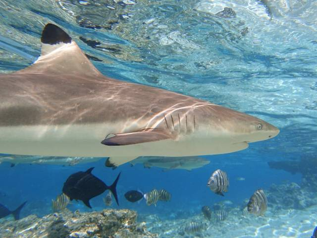
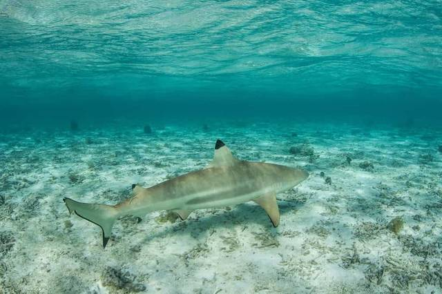
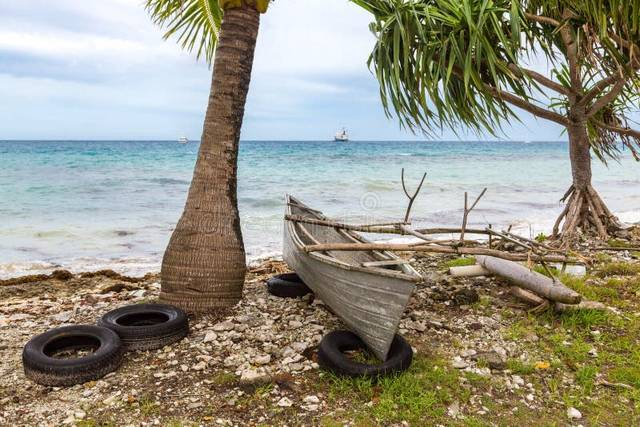
Il classico assoluto di Moorea: razze pastinaca e squali pinna nera che nuotano in acqua bassa, più stop nel coral garden. Emozione gigante, zero pericolo se guidati.
💡 Consigli: Prenota 2-3 gg prima (sold-out in agosto) · uscita mattina = acqua calma · porta action-cam · lycra/rash guard contro il sole · ospiti Cook's Bay: −10% Voila (COOKS10), −20% Island Tour (MOOREA20), −15% Vitamin Sea (COOKSDEAL15).
⭐ Tiki Tour in piroga + motu ~14k XPF
🥥 Moorea · full day · ~14k XPF · il top-rated dell'isola
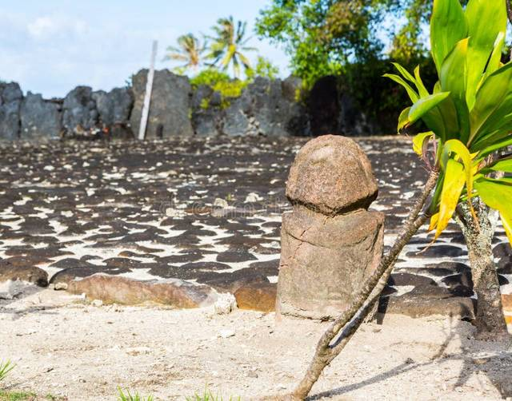
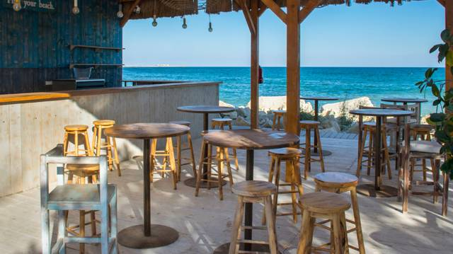
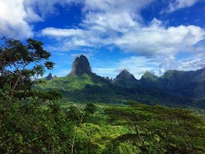
Piroga tradizionale, tiki sommersi, marae antichi e picnic polinesiano su un motu. Cultura + laguna in un colpo solo.
💡 Consigli: Prenota 1 settimana prima · cappello e acqua · chiedi alla guida dei marae: storie pazzesche · cash per artigianato locale · ospiti Cook's Bay: codici sconto nella lista completa qui sotto.
⭐ Full Day Lagoon + motu picnic ~22k XPF
💜 Bora Bora · 7h · ~22k XPF · Lagoon Service
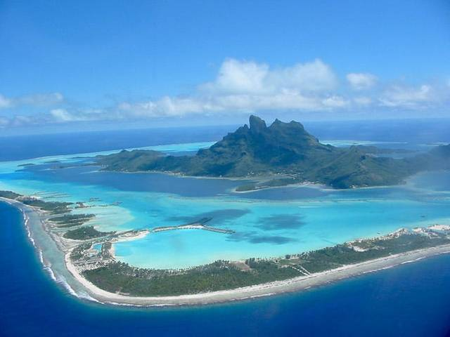
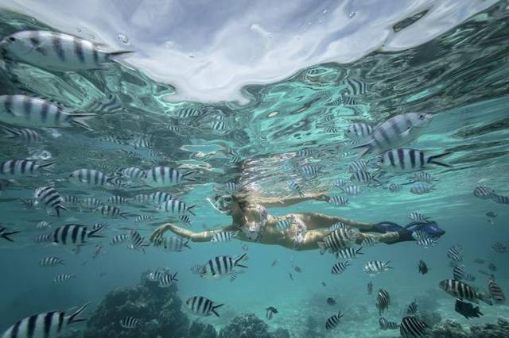
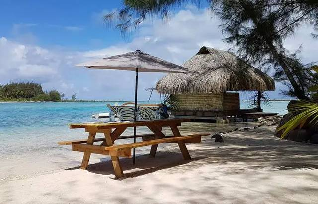
L'esperienza-cartolina: outrigger canoe, ukulele a bordo, snorkel nel coral garden e pranzo tahitiano su un motu davanti a Otemanu.
💡 Consigli: Prenota PRIMA di partire dall'Italia (cronico sold-out) · felpa leggera per il vento in barca · attrezzatura snorkel inclusa · 📞 Lagoon Service +689 87 75 69 57.
Sunset catamaran ~11-13k XPF
💜 Bora Bora · 2h · ~11-13k XPF
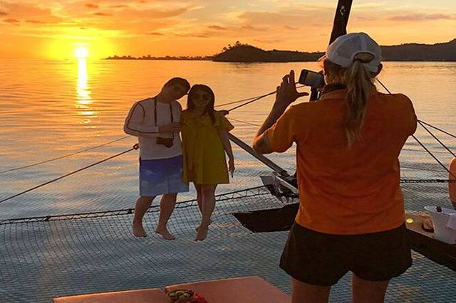
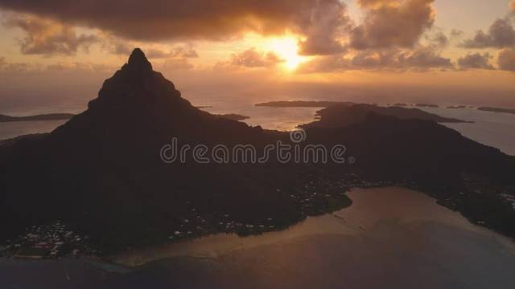
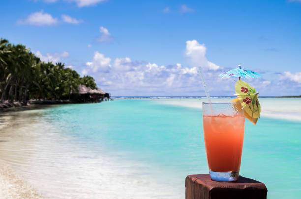
Vela al tramonto con la silhouette del Mont Otemanu e cocktail in mano. La foto che posterai per prima.
💡 Consigli: Prenota 2-3 gg prima · felpa: dopo il sole l'aliseo pizzica · lato sinistro della barca = vista migliore · 📞 Reef Discovery +689 87 76 43 43.
🚙 4×4 Papenoo Valley ~17k XPF
🌺 Tahiti · 8h · ~17k XPF · Te Mana Tahiti Tours
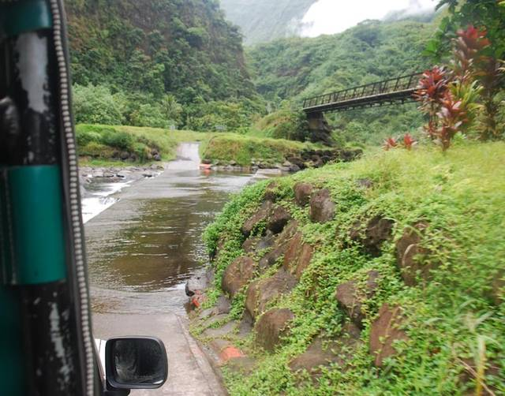
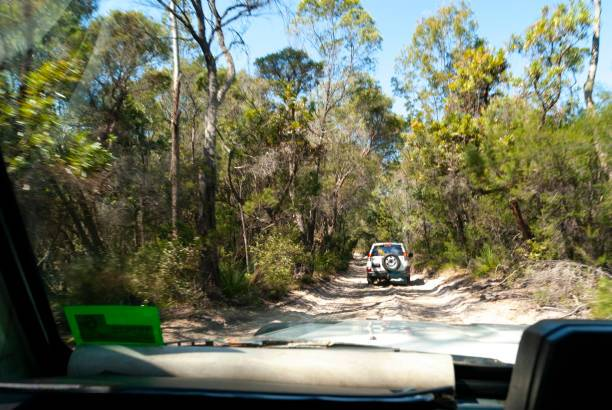
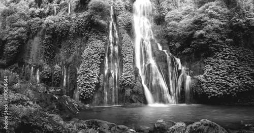
L'interno selvaggio di Tahiti: cascate, belvedere sulla valle Papenoo, fango e giungla. L'avventura più richiesta dell'isola.
💡 Consigli: Prenota prima di partire · scarpe chiuse + k-way · macchina fotografica con laccio (polvere e schizzi).
🐬 Dolphin watching + Aquarium ~9k XPF
🌺 Tahiti · 2-3h · ~9k XPF · Activiseas
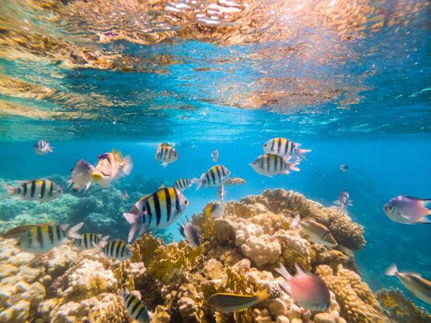
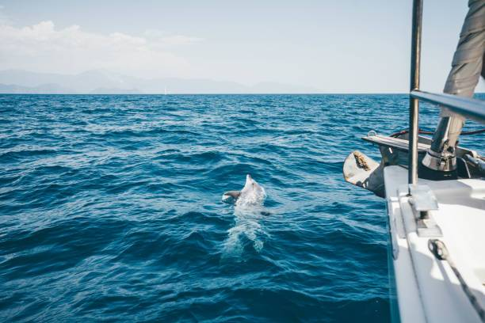
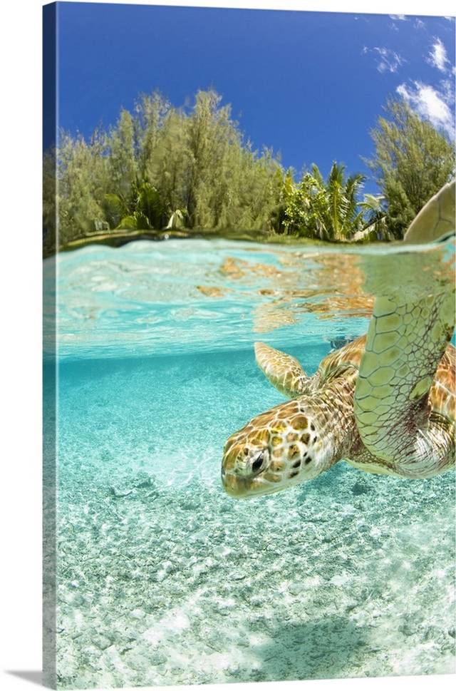
Uscita mattutina coi delfini di Ta'apuna e snorkel all'Aquarium di Faa'a: coralli, relitti WWII e, con fortuna, tartarughe.
💡 Consigli: Delfini più attivi 8-10 del mattino · pick-up hotel incluso · mai toccare gli animali: si guarda, non si tocca.
🐋 Whale watching · megattere ~10-13k XPF
💜 Bora Bora · 3-4h · AGOSTO = PIENA STAGIONE
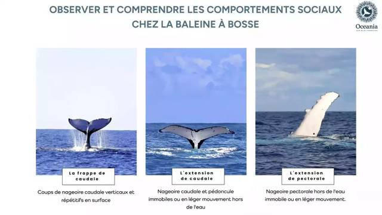
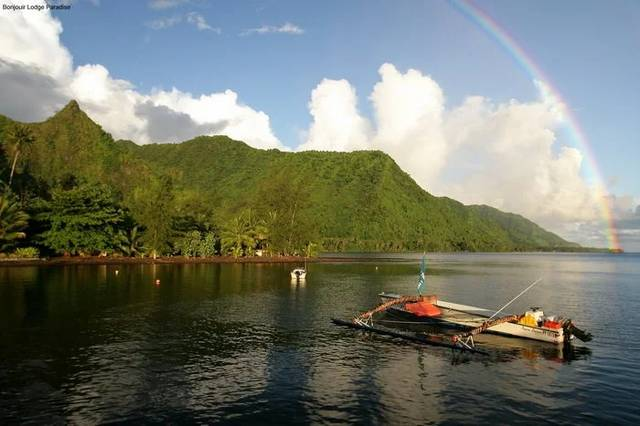
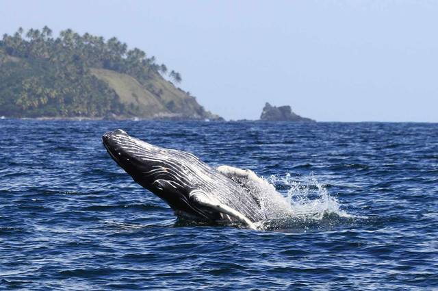
Ad agosto le megattere cantano e saltano alle Isole Sottovento: l'uscita più emozionante del viaggio, guide certificate.
Lagunario naturale del resort: razze, pesci pappagallo, tartarughe. Snorkeling libero. Maschera/pinne al beach kiosk (deposito documento).
🎨 Dimostrazioni culturali GRATIS ospiti
Stesso giorno
Intreccio pareu, ukulele, danza 'ori Tahiti, apertura cocco. Calendario settimanale al kiosk activity center.
🏊 Piscina + jogging + padel GRATIS ospiti
Padel: prenota mattina
Piscina infinity, percorso jogging nei giardini, 2 campi padel outdoor (aperti da set. 2024). Padel: slot 1h, prenota telefonicamente al concierge stesso giorno.
🚗 Via TERRA (5)
Circle Island Tour ~12k XPF
2-3 gg prima
5-8 h · Marama Tours. Partenze giornaliere. Sold-out raro per tour condiviso, frequente per private in agosto.
🚲 Dintorni in bici: Te Honu Iti 2' · Rudy's/Moz/Casa Pizza 5' · Super U 5' · Beach Café ~35' — noleggi: Moorea Fun Bike (in hotel) & EBike Moorea: dettagli nel tab 🚲 Moorea bici.
🎟️ Convenzioni ESCLUSIVE ospiti Cook's Bay
Codici negoziati per chi soggiorna in hotel: cita il codice quando prenoti (sito o telefono). Volantino alla reception.
🚲 Nuova riga · dintorni in bici: Snack Matira 5' · Beach Club 10' · Roulotte 5' (sera) · Vaitape (negozi, perle, Chin Lee) ~30' — bici & e-bike gratis per gli ospiti: dettagli nel tab 🚲 In bici.
✅ Attività GRATUITE dell'hotel (4)
🛶 Kayak & snorkel gratis GRATIS ospiti
First-come · no booking
Kayak e attrezzatura da snorkel gratuiti. Matira Beach a 5 min a piedi. Deposito documento al front desk / beach staff.
🚴 Bike rental (incluse e-bike) GRATIS ospiti
Prenota mattina
Biciclette gratuite per girare l'isola. Perfetto per ristoranti e porto di Vaitape (12 km). E-bike molto più richieste delle tradizionali.
🏊 Piscina outdoor + Matira Beach GRATIS ospiti
Accesso libero
Piscina fronte spiaggia + accesso diretto alla laguna. Matira = spiaggia pubblica gratuita, 5 min a piedi, tra le più belle del mondo.
🎶 Musica polinesiana dal vivo Incluso
Cena con musica: 1 gg prima
Intrattenimento serale con gruppi tradizionali al bar/ristorante (date selezionate). "Island Original Travel Badge". Weekly schedule al ricevimento.
🌊 Via MARE (6)
Lagoon Safari razze + squali ~13,5k XPF
1 sett prima
½ gg (~4h) · il must di Bora Bora. Pick-up al pontile hotel. Snorkel gear + acqua inclusi. Sold-out anche 10 gg prima in agosto.
1 gg (~7h) · la top experience di Bora Bora. Outrigger canoe tradizionale, ukulele a bordo, pranzo tahitiano su motu. Prenota prima di partire dall'Italia.
½ gg · piccola auto elettrica scoperta per giro isola (32 km). Patente base valida. Batteria ~40 km, ricarica a Vaitape. Divertente ma velocità ridotta.
½ gg · charter interi. Partenza 05:30 alba. Pesca marlin/mahi-mahi/tonno. Poche barche di livello a Bora Bora: marlin, tonno, mahi-mahi. Pick-up al pontile dell'hotel.
Grande festival etno-culturale. Musica dal vivo, artigianato tradizionale, cucina polinesiana, dimostrazioni di tapa e sculture.
Chiusura Heiva i Bora Bora 2 ago
Bora Bora
Fine sport tradizionali. Sarai a Bora dal 18/8, troppo tardi — ma nei ristoranti sentirai ancora l'eco.
Salon Rentrée, Sports & Loisirs 6-9 ago
Papeete · Parc Expo Mamao
Coincide col tuo arrivo sabato 8/8! Ottima immersione culturale non impegnativa per domenica 9 agosto (jet-lag day). Tardo pomeriggio 16-19h consigliato.
🇫🇷 Ferragosto / Assomption Sab 15 ago
Nazionale · Sarai a Moorea
Festa nazionale francese. Molti negozi/uffici chiusi la mattina, aperti dal pomeriggio. Buon giorno per una giornata rilassata in laguna o al Belvédère di Opunohu.
💡 Tip del giorno (T-3)
Verifica ESTA — deve essere approvata ≥72h prima del volo. Costo ~21 USD. Sito: esta.cbp.dhs.gov
Cambio euro/XPF — richiedi ~200 € in XPF alla tua banca (per taxi/mance/roulottes). Il resto lo prelevi in loco al bancomat.
Scarica app offline: Maps.me con mappe Tahiti/Moorea/Bora Bora, Google Translate FR/EN offline, Aremiti (se disponibile).
Prenota transfer SFO → Francisco Bay Inn — Uber ~40-50 USD è la scelta migliore dopo 12h di volo.
Prenota escursioni "week-before" ora: Tiki Tour Moorea, Full Day Lagoon Bora Bora, 4×4 Papenoo, Elicottero Tahiti.
🎁 30 consigli personali
Suddivisi in 6 categorie. Spunta man mano che li verifichi/applichi.
📱 Pre-partenza · 5 consigli
ESTA per USA: approvazione entro 72h dal volo. ~21 USD. Fondamentale.
Fotocopie documenti: passaporto + assicurazione + biglietti in cloud (Google Drive/iCloud) + copia cartacea in valigia separata.
Notifica banca: avvisa la tua banca del viaggio USA + Polinesia per evitare blocchi carta. Amex NON accettato dalla maggior parte dei ristoranti/hotel piccoli.
eSim locale Vini o Vodafone World: il roaming EU non copre Polinesia. Vini eSim ~35 €/10 GB. In alternativa: WiFi hotel + numero locale al bisogno.
Backup elettronica: adattatore US (tipo A) per SF + adattatore UE→Polinesia (tipo E). Powerbank ≥10.000 mAh.
💰 Denaro & pagamenti · 5 consigli
Cambio 1€ = 119,33 XPF (fisso storicamente). ~200 € in XPF alla partenza da banca italiana per emergenze/roulottes.
Bancomat in loco: Banque de Tahiti, Socredo, BNP. Commissione ~500 XPF/prelievo. Prelievi da 20.000-40.000 XPF/volta.
Carte accettate: Visa/Mastercard OK negli hotel + ristoranti medio-grandi. Amex spesso NO.
Cash mandatory: roulottes Vaiete (cash only), Te Honu Iti (cash), Roulotte Matira (cash), Snack Matira (preferito cash), taxi in generale.
Mance: in Polinesia NON si mancia (tip incluso nel prezzo). A SF: 18-20% obbligatorio nei ristoranti.
✈️ Voli & transfer · 5 consigli
Check-in online a T-24h per tutti i voli. Swiss + United + Lufthansa: tutti supportano boarding pass mobile.
Bagaglio a mano UA 115: massimo 1 trolley + 1 personale. Verifica peso — United è severa (23 kg checked, 10 kg cabin).
Trasferimento SFO → Francisco Bay Inn: Uber ~40-50 USD, ~30 min. BART + bus = 90 min per risparmiare 40 USD, sconsigliato dopo 12h di volo.
Transfer PPT arrivo: IC Tahiti dista 3 min in auto dall'aeroporto Faa'a. Shuttle IC gratuito se prenoti in anticipo (email concierge).
Voli inter-isola Air Moana: arriva 90 min prima (aeroporto Moorea Temae piccolo, controlli veloci ma coda check-in). 1 bagaglio 15 kg incluso.
🏊 Attività & escursioni · 5 consigli
Prenota subito le "week-before": Tiki Tour Moorea, Full Day Lagoon Bora Bora, 4×4 Papenoo Tahiti, Elicottero panoramico. In agosto sold-out cronico.
Attività gratuite hotel: tartarughe IC Tahiti (a donazione), kayak Cook's Bay/Royal, snorkeling reef Le Moana. Approfittane appieno.
Reef-safe sunscreen obbligatorio per legge in Polinesia. Vietati oxybenzone/octinoxate. Compra Stream2Sea/Badger/Manda in Italia (in loco costa 3x).
Ciguatera: evita pesci di scogliera grandi (barracuda, cernia, pesce pappagallo, dentice). Sicuri: tonno, mahi-mahi, marlin, bonito.
Sunset spot must: catamaran cruise Bora Bora con vista Mont Otemanu = la classica cartolina. Prenota 2-3 gg prima da concierge Royal o Le Moana.
🌺 Cultura & galateo · 5 consigli
Saluto: "Ia ora na" (buongiorno) + "Māuruuru" (grazie) — impararli è molto apprezzato. Sorriso & calma sempre premiati.
Dress code: abbigliamento leggero + copri-spalle per chiese/marae. Costume solo su spiaggia/piscina, mai in ristorante.
Fiore all'orecchio: destra = single, sinistra = impegnato/a. Se te lo mettono all'arrivo hotel: è solo benvenuto, non ha significato.
Silenzio in marae (siti sacri antichi): ambienti spirituali, no toccare pietre, no salire, no foto di persone in preghiera.
Ferragosto 15/8: festa nazionale francese, molti negozi chiusi la mattina. Buona giornata resort/laguna.
🌙 Vita quotidiana in loco · 5 consigli
Ritmo polinesiano: lento e rilassato. Servizio non veloce, ma cortese. Prendila con calma: fai parte del ritmo, non lottare contro.
Fuso orario: Papeete UTC-10 (12 ore indietro da Roma). Chiama casa la mattina italiana = la sera polinesiana.
Acqua potabile: Tahiti/Moorea sì (rete controllata), Bora Bora meglio bottiglia (spesso desalinizzata). Chiedi al concierge del tuo hotel.
Alba/tramonto: ~05:45 / ~17:45 tutto l'anno (vicino equatore). Alba di Bora Bora vale sveglia presto almeno 1 mattina.
Zanzare: più attive al tramonto/alba. Repellente sempre in tasca. In hotel spesso zanzariera sui letti (specialmente Cook's Bay bungalow).
🚑 Ospedali & emergenze
Rete sanitaria delle Isole della Società (Tahiti, Moorea, Bora Bora, Raiatea) e numeri d'emergenza attivi 24/7.
🏥 Ospedale di riferimento: CHPF Taaone (Tahiti). Moorea: Hôpital Afareaitu · Bora Bora: Hôpital Vaitape · Raiatea: Hôpital Uturoa. Per casi gravi: evacuazione su NZ/AUS/FR → verifica copertura assicurazione >500.000 €.
🍽️ Cibo & bevande · 30 + 15
I piatti tipici delle tue 3 isole e le bevande da provare, con nome tahitiano e pronuncia. Prezzi indicativi in XPF.
🌺 Tahiti
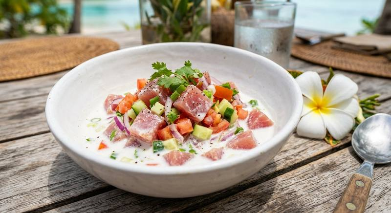
🐟 E'ia ota · Poisson cru 2.000-2.500 XPF
🗣️ si pronuncia: è-ia ò-ta
Ingredienti: Il piatto nazionale: tonno crudo marinato nel lime, latte di cocco, pomodoro, cetriolo, cipolla.
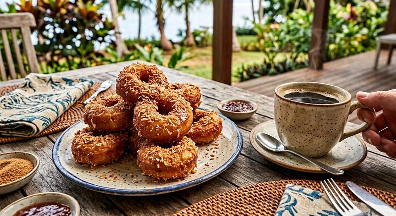
🍩 Firi firi 200-300 XPF
🗣️ si pronuncia: fì-ri fì-ri
Ingredienti: Ciambella fritta a forma di otto: farina, latte di cocco, zucchero. Si puccia nel caffè.
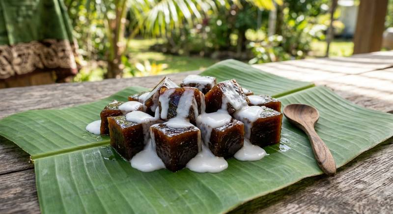
🍌 Po'e mei'a 500-800 XPF
🗣️ si pronuncia: po-è mè-ia
Ingredienti: Pudding di banana (mei'a), amido di manioca, latte di cocco e vaniglia di Taha'a.
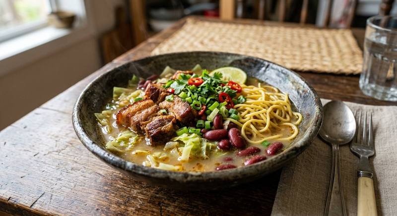
🥘 Ma'a tinito ~1.500 XPF
🗣️ si pronuncia: mà-a ti-nì-to
Ingredienti: Il piatto della domenica sino-tahitiana: maiale, cavolo, fagioli rossi, noodle.
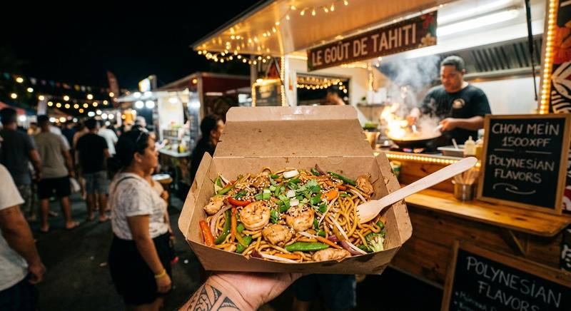
🍜 Chow mein delle roulottes 1.500-2.000 XPF
🗣️ si pronuncia: scio-meìn
Ingredienti: Nome locale sino-tahitiano: noodle saltati con pollo, gamberi, verdure e soia. Street food serale.
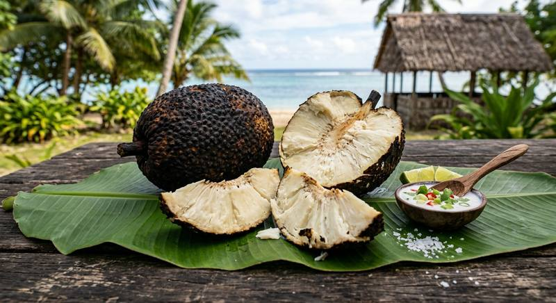
🍞 'Uru arrosto 500-1.000 XPF
🗣️ si pronuncia: ù-ru
Ingredienti: Frutto del pane intero cotto sulla brace: il "pane" delle isole, polpa cremosa.
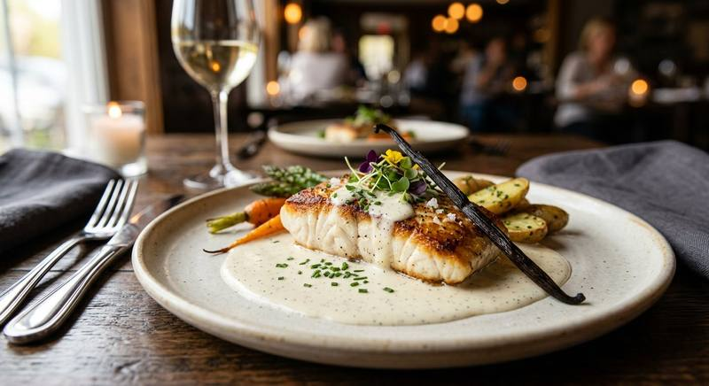
🌼 Mahi-mahi alla vaniglia 2.500-3.500 XPF
🗣️ si pronuncia: mà-i mà-i
Ingredienti: Filetto di mahi-mahi con crema di cocco e vaniglia di Taha'a: il piatto elegante.
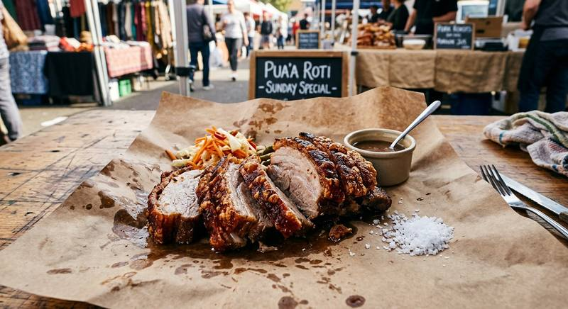
🥓 Pua'a roti 1.500-2.000 XPF
🗣️ si pronuncia: puà-a rò-ti
Ingredienti: Maiale arrosto della domenica mattina, crosta croccante: mercato e roulottes.
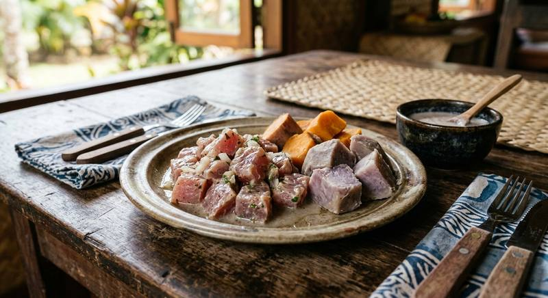
🫙 Fafaru prezzo vario XPF
🗣️ si pronuncia: fa-fa-rù
Ingredienti: Tonno fermentato in acqua di mare, servito con mitihue (cocco fermentato), taro e 'umara. Per coraggiosi: odore forte, sapore amato dai locali.
⚠️ CIGUATERA: se preparato con pesci della laguna (non tonno/spadaro) vale il rischio ciguatera: chiedi quale pesce è stato usato.
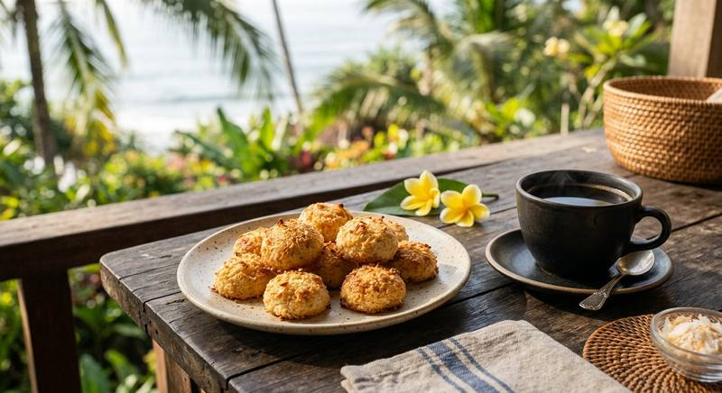
🍪 Kato 200-400 XPF
🗣️ si pronuncia: kà-to
Ingredienti: Biscottini al latte di cocco da inzuppare nel caffè: merenda dei bambini (e non).
🥥 Moorea
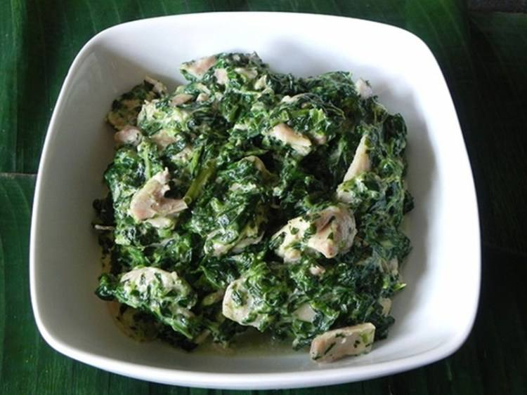
🍗 Moa fafa · Poulet fafa 1.800-2.500 XPF
🗣️ si pronuncia: mò-a fà-fa
Ingredienti: Pollo stufato con fafa (foglie giovani di taro) e latte di cocco: il comfort food polinesiano.
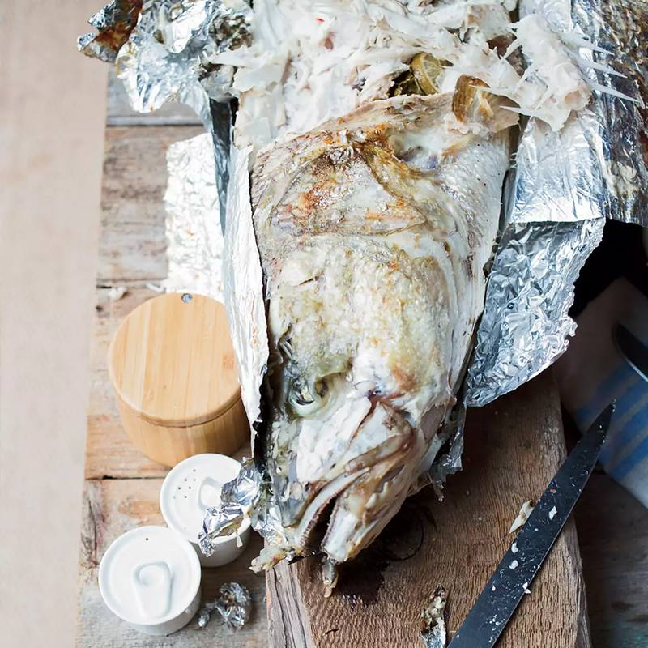
🐠 E'ia alla brace 2.000-3.000 XPF
🗣️ si pronuncia: è-ia
Ingredienti: Pescato del giorno (roi, pesce pappagallo) intero nella foglia di banano, lime e burro.
⚠️ CIGUATERA: roi (cernia), pesce pappagallo e dentice sono pesci di barriera a rischio: chiedi al ristorante di che pesce si tratta; sicuri = tonno, mahi-mahi, marlin, bonito.
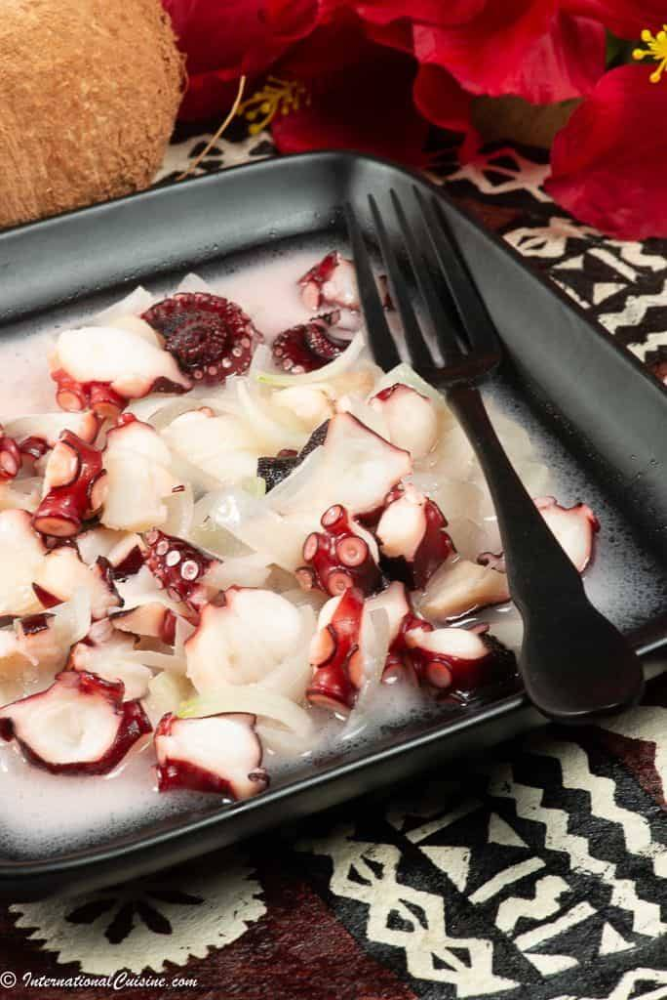
🐙 Fe'e al cocco ~2.000 XPF
🗣️ si pronuncia: fe-è
Ingredienti: Polpo tenero stufato in crema di cocco e cipolla: specialità degli snack.
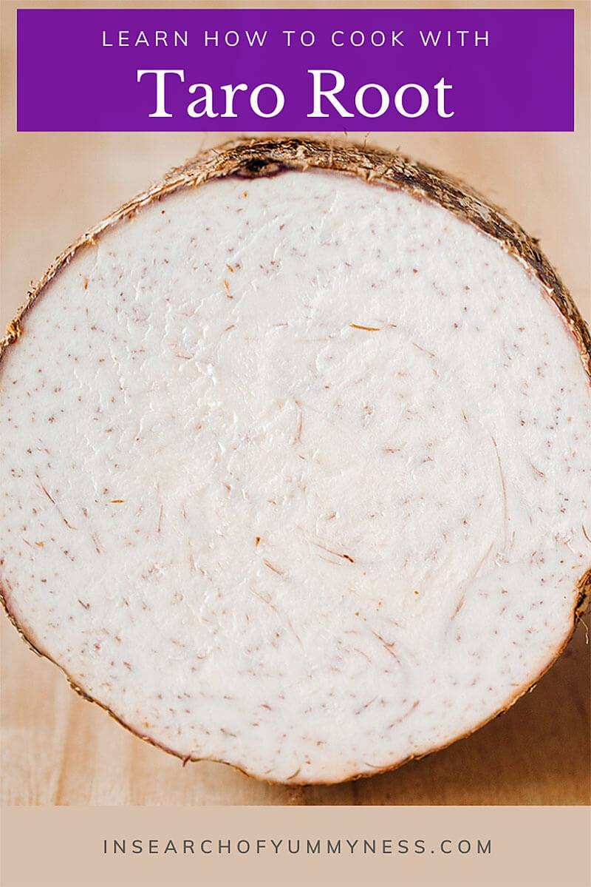
🍠 Taro e 'umara 500-800 XPF
🗣️ si pronuncia: tà-ro e ù-ma-ra
Ingredienti: Taro e patata dolce arrostiti delle valli Opunohu/Cook's Bay: il contorno di casa.
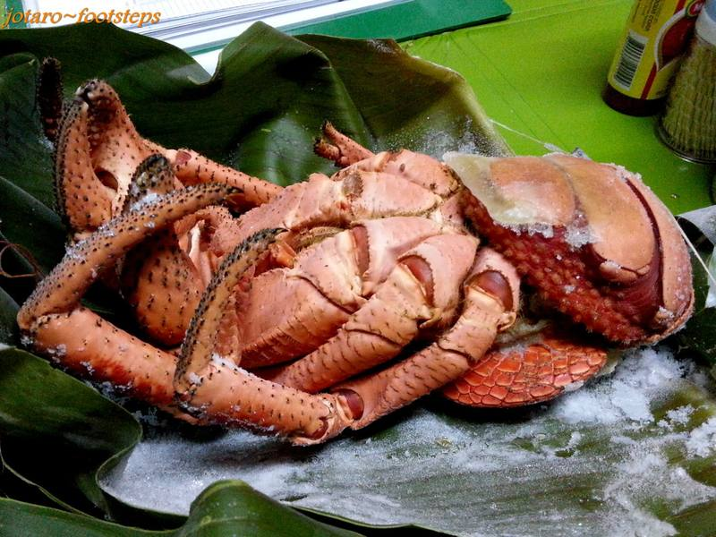
🦀 Kaveu 2.500-4.000 XPF
🗣️ si pronuncia: ka-vè-u
Ingredienti: Granchio del cocco cotto, servito con lime: piatto festivo raro, da ordinare prima.
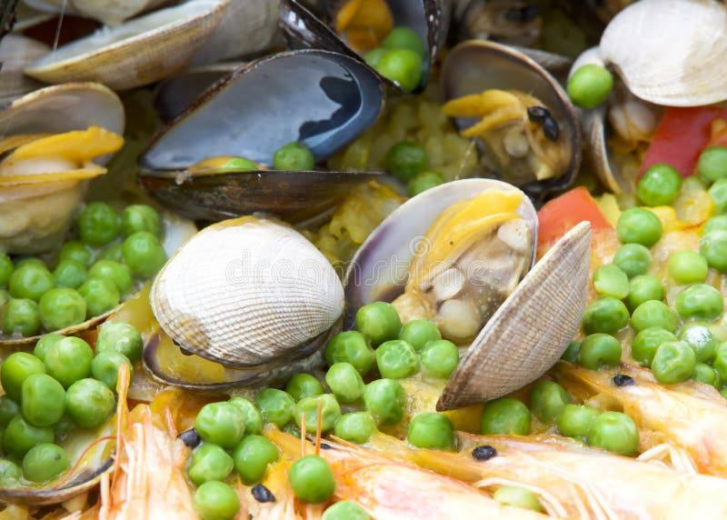
🦪 Pāhua al lime 1.500-2.500 XPF
🗣️ si pronuncia: pa-ù-a
Ingredienti: Carne di vongola gigante (tridacna) cruda al lime o in curry di cocco: sapore di laguna.
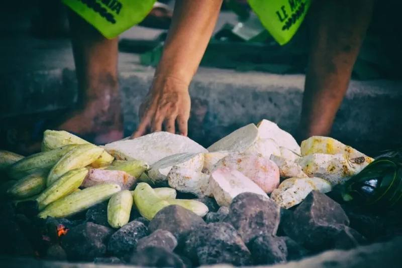
🔥 Pua'a ahima'a ~2.000 XPF
🗣️ si pronuncia: a-i-mà-a
Ingredienti: Maiale, 'uru, taro e fe'i cotti al vapore nel forno interrato di pietre calde: il rito della domenica.
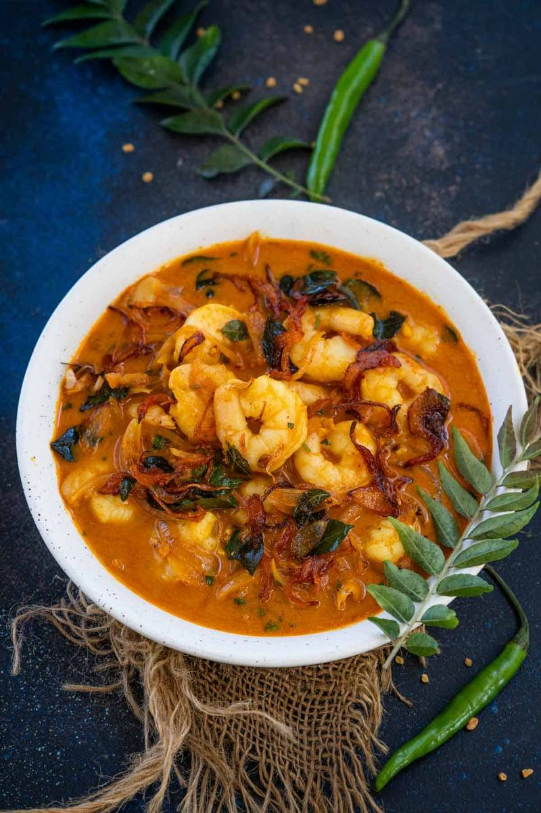
🦐 Chevrettes in curry 2.000-3.000 XPF
🗣️ si pronuncia: sce-vrèt
Ingredienti: Nome locale: gamberetti d'acqua dolce stufati in curry e latte di cocco.
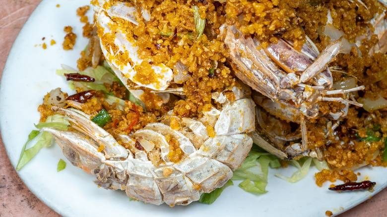
🦞 Varo grigliato 2.500-4.000 XPF
🗣️ si pronuncia: và-ro
Ingredienti: Cannocchia/mantis shrimp alla brace con burro all'aglio: delizia delle maree.
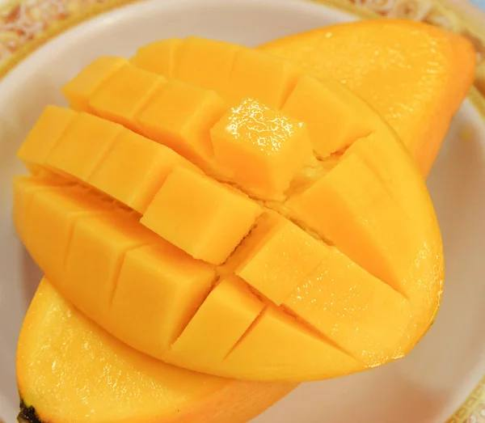
🥭 Manga 300-600 XPF
🗣️ si pronuncia: màn-ga
Ingredienti: Mango dolce maturo con spruzzo di lime: la frutta più buona del mondo, dicono qui.
💜 Bora Bora
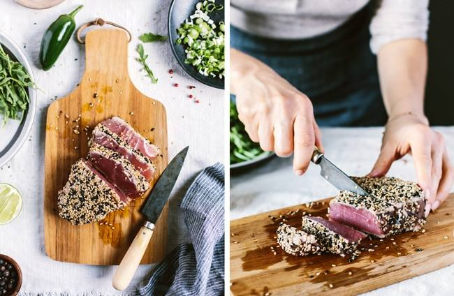
🍣 Tonno tataki 2.500-3.500 XPF
🗣️ si pronuncia: ta-tà-ki
Ingredienti: Tonno della laguna scottato al sesamo, soia e lime: l'aperitivo fronte Otemanu.
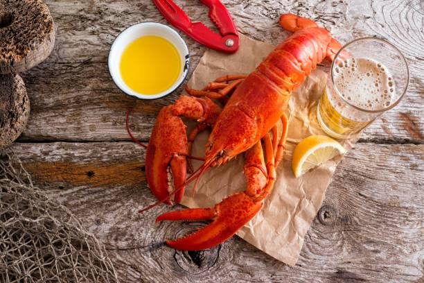
🦞 'Ōura miti · Aragosta alla vaniglia 6.000-9.000 XPF
🗣️ si pronuncia: ò-u-ra mì-ti
Ingredienti: Aragosta locale (oura miti) grigliata con burro alla vaniglia di Taha'a: la cena speciale.
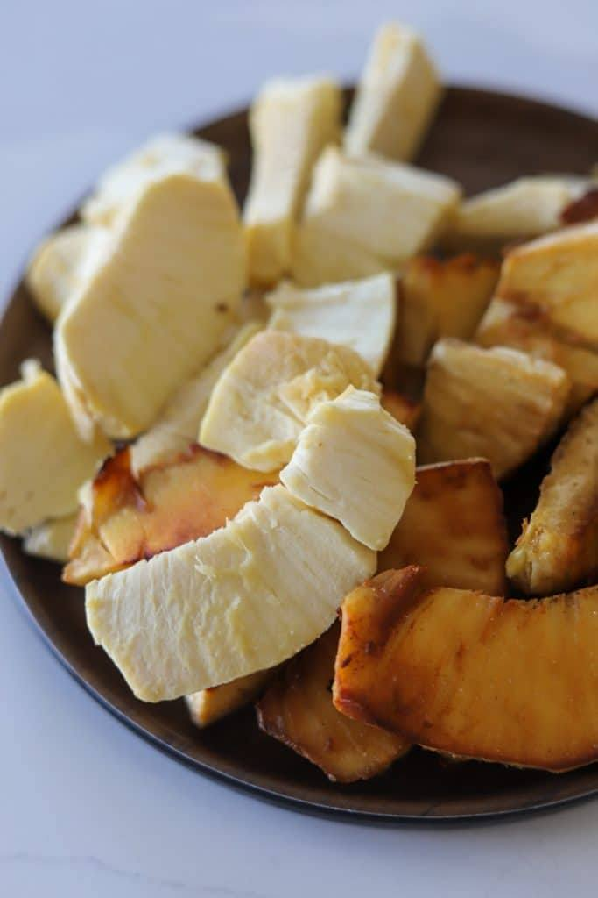
🥫 'Uru fritto & pua toro 1.200-1.800 XPF
🗣️ si pronuncia: puà tò-ro
Ingredienti: Frittelle di frutto del pane con corned beef rosolato (pua toro): comfort food isolano.
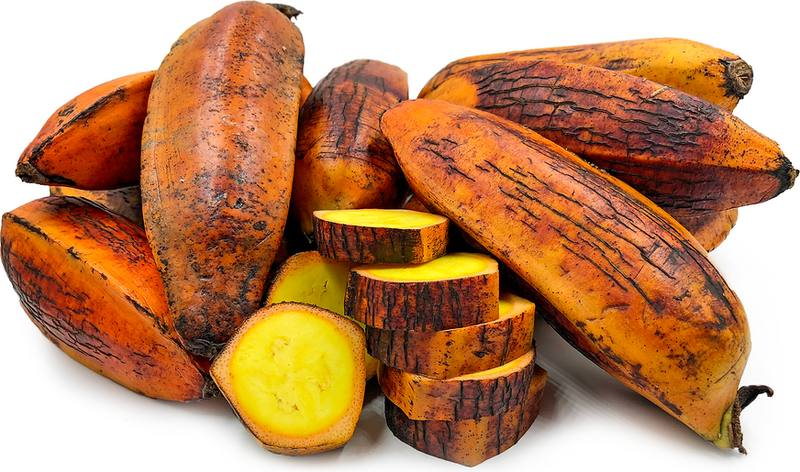
🍮 Fe'i al cocco 600-900 XPF
🗣️ si pronuncia: fe-ì
Ingredienti: Banana rossa fe'i cotta al forno nel latte di cocco: dolce umile, colore arancio.
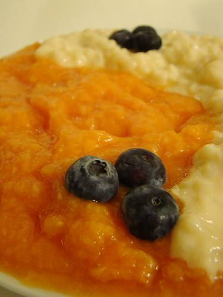
🍈 Po'e di papaya 500-800 XPF
🗣️ si pronuncia: po-è
Ingredienti: Pudding di papaya con amido di manioca, servito con crema di cocco fresca.
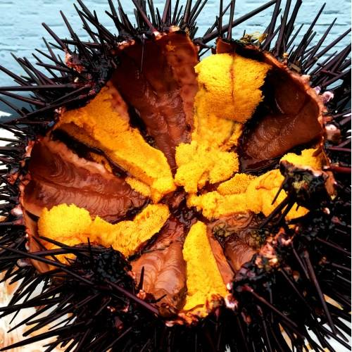
🟣 Vana 1.000-2.000 XPF
🗣️ si pronuncia: và-na
Ingredienti: Riccio di mare aperto al momento, crudo con lime: lo spuntino dei pescatori.
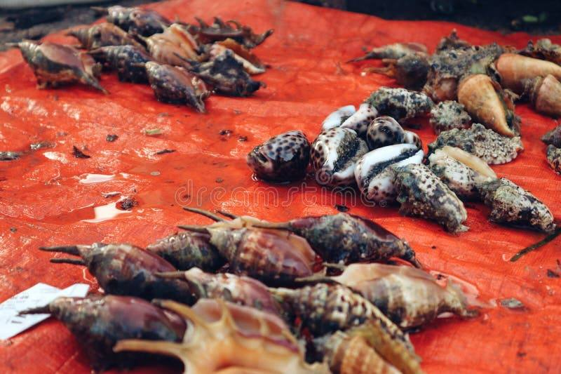
🐚 Mā'oa taioro 1.000-1.800 XPF
🗣️ si pronuncia: ma-ò-a
Ingredienti: Lumachine di mare raccolte sulla barriera, in salsa taioro di cocco fermentato.
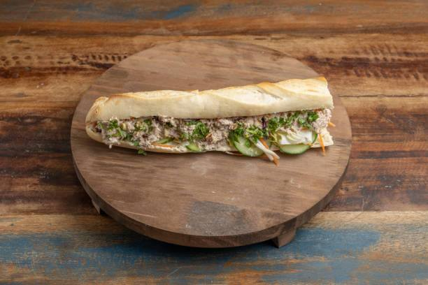
🥖 Casse-croûte di tonno 800-1.200 XPF
🗣️ si pronuncia: cas-crùt
Ingredienti: Nome locale: baguette croccante con pesce crudo marinato e burro. Il pranzo da snack.
🌰 Mape caldi 300-500 XPF
🗣️ si pronuncia: mà-pe
Ingredienti: Le "castagne polinesiane" arrostite: snack da strada tiepido, sapore tra castagna e noce.
🍨 Dessert alla vaniglia (vanira) di Taha'a 800-1.200 XPF
🗣️ si pronuncia: va-nì-ra
Ingredienti: Gelato o torta con la vaniglia nera migliore del mondo (Taha'a è a un braccio di mare).
🍹 Bevande alcoliche
🍺 Pia Hinano 400-600 XPF
🗣️ si pronuncia: pìa
Ingredienti: La lager locale dal 1955, ghiacciata: l'etichetta con la vahine è un souvenir. (pia = birra)
🍺 Pia Manuia 600-800 XPF
🗣️ si pronuncia: pìa ma-nuì-a
Ingredienti: Il birrificio craft polinesiano: blonde e IPA giovani. Manuia = salute/fortuna!
🥃 Ti' punch al rum Mana'o 800-1.200 XPF
🗣️ si pronuncia: tì punch
Ingredienti: Rum bianco di Tahiti, lime e zucchero di canna: corto e deciso, come nelle Antille.
🥃 Rum Mana'o invecchiato 1.000-1.500 XPF
🗣️ si pronuncia: ma-na-ò
Ingredienti: Ambrato, da sorseggiare al tramonto sulla veranda del bungalow.
🥥 Punch coco (ha'ari) 900-1.300 XPF
🗣️ si pronuncia: ha-à-ri
Ingredienti: Rum, cocco fresco (ha'ari) e ananas: servito nella noce aperta. Pericolosamente buono.
🍹 Punch planteur 900-1.300 XPF
🗣️ si pronuncia: plan-tèr
Ingredienti: Rum + succhi tropicali (ananas, guava, manga): il rito del tramonto su ogni veranda.
🌼 Liquore alla vaniglia di Taha'a ~1.000 XPF
🗣️ si pronuncia: ta-hà-a
Ingredienti: Digestivo artigianale profumatissimo dell'isola della vaniglia. Da riportare a casa.
🥤 Bevande analcoliche
🥥 Pape ha'ari · acqua di cocco 300-500 XPF
🗣️ si pronuncia: pà-pe ha-à-ri
Ingredienti: Acqua di cocco fresca (pape = acqua, ha'ari = cocco) aperta al momento in spiaggia.
🥤 Coco glacé 500-800 XPF
🗣️ si pronuncia: co-co gla-sè
Ingredienti: Cocco frullato ghiacciato dei chioschi: la merenda definitiva sotto le palme.
Citronnade allo zenzero 400-600 XPF
🗣️ si pronuncia: si-tronàd
Ingredienti: Lime, zenzero fresco e zucchero di canna: la limonata di casa delle roulottes.
🧃 Succo di nono 500-900 XPF
🗣️ si pronuncia: nò-no
Ingredienti: Il succo di noni, celebre "rimedio" locale: sapore audace, fama da superfood.
🍍 Succo d'ananas Rotui 300-500 XPF
🗣️ si pronuncia: ro-tuì
Ingredienti: L'ananas di Moorea (il più dolce del mondo) in succo: prodotto ai piedi del monte Rotui.
🥭 Succo di manga & guava 300-500 XPF
🗣️ si pronuncia: màn-ga
Ingredienti: Nettari Rotui di mango e guava: la scorta da valigia per il rientro.
☕ Caffè di Taha'a 300-500 XPF
🗣️ si pronuncia: ta-hà-a
Ingredienti: Caffè coltivato sull'isola della vaniglia: colazione profumata nelle pensioni.
☕ Cioccolata calda + firi firi 400-600 XPF
🗣️ si pronuncia: cio-co-là-ta
Ingredienti: La colazione polinesiana classica: cioccolata calda densa con firi firi da pucciare.
⚠️ Ciguatera: evita i grandi pesci di barriera (barracuda, cernia adulta, grande pesce pappagallo, dentice). Sicuri: tonno, mahi-mahi, marlin, bonito. Nel dubbio chiedi: "ciguatera?"
Operatore 100% polinesiano specializzato in tour della laguna con canoe outrigger tradizionali: mezza giornata, giornata intera con buffet polinesiano su motu, privati e sunset con o senza cena. Team locale appassionato, ukulele a bordo e ospitalità vera; fa anche combo jet-ski e quad. Prenotazione online semplice; il riferimento per il tour-cartolina classico.
Specialisti dello snorkeling in barca con gruppi piccoli (8 persone) e guide certificate con conoscenze di biologia marina: Signature Lagoon Tour con le mante, whale watching nella stagione (ago-ott), treasure hunt per bambini e tour privati o luxury. Famosi per qualità del servizio e rispetto della natura; anche sunset cruise. Tra i più recensiti dell’isola.
Storica compagnia di attività acquatiche a Bora Bora, attiva dal 1969: flotta di 17 barche e 14 jet-ski per tour privati, di gruppo e combo. Jet-ski con snorkel, pesca in laguna, glass-bottom boat, whale watching e pranzi su motu. Guide locali certificate e valutazione 9,4/10 su TripAdvisor: il tuttofare di fiducia per l’acqua.
Centro immersioni con 33 anni di attività e premio Travellers’ Choice di TripAdvisor: battesimi per principianti, immersioni per brevettati, corsi PADI e CMAS, barche e istruttori privati. Nitrox gratuito per i brevettati. La scelta giusta per i giardini di corallo e le stazioni di pulizia delle mante, con comfort e sicurezza al primo posto.
La catena di diving più grande della Polinesia, con base a Toopua: immersioni per tutti i livelli, corsi con certificazioni internazionali e uscite mattina e pomeriggio. Organizzazione solida e multisede: comoda se vuoi immergerti anche a Tahiti o Moorea con lo stesso operatore. Prenota con 1-2 giorni di anticipo in agosto.
Famosi per la randonnée sous-marine (helmet dive): cammini a 3 m nel corallo respirando normalmente col casco, senza saper nuotare, dai 6 anni in su. Guide diplomate di Stato, transfer dall’hotel incluso, bevande e snack compresi, foto opzionali. Oltre 15 anni di attività e 4,8/5 su TripAdvisor: perfetto per famiglie e non nuotatori.
Gli specialisti della terra: safari 4×4 nell’interno tra cannoni WWII e marae antichi, sunset tour dell’isola, stargazing e combo land & sea con snorkeling. Guide locali che raccontano storia e cultura di Bora Bora; anche privati su misura. L’escursione terrestre più completa per capire l’isola oltre la cartolina.
Base vicino a Matira per jet-ski e quad: tour guidati della laguna con formule flessibili e combinazioni terra+acqua. Ufficio raggiungibile al +689 40 67 62 73, email contact@matirajettours.com. Buona alternativa per adrenalina in laguna senza rinunciare a una guida locale.
Combo quad/ATV e jet-ski in una sola uscita: terra e laguna insieme, ideale se vuoi fare tutto in giornata. Contatti +689 89 75 54 58 / +689 87 75 54 58, email contact@atvjetskiadventures.com. Formula divertente per coppie e piccoli gruppi; casco e briefing inclusi.
Specialisti di pesca d’altura: blue marlin, tonno pinna gialla, mahi-mahi e wahoo, più reef fishing (GT, barracuda) e combo pesca+snorkel per famiglie. Pick-up diretto al pontile del tuo hotel, mezza o giornata intera, tour personalizzabili col proprietario Carter White. Prenota e paga anche dopo: formula book now pay later.
L’operatore dei voli panoramici su Bora Bora: 30-60 minuti sopra Otemanu, la laguna e i motu, o transfer spettacolari tra isole. Base al Pago dropzone di Nunu’e; linea dedicata Isole Sottovento +689 87 777 186. Voli del mattino più stabili; prenota 1-2 settimane prima in alta stagione: è l’esperienza che si ricorda per sempre.
La spa dell’InterContinental Bora Bora Resort & Thalasso: trattamenti con acqua di profondità pompata a 500 m, idroterapia e bungalow dal fondo trasparente sul lagon. Aperta tutti i giorni 9:30-19:00; best-seller il Deep Sea Water Wrap. Accessibile anche a chi non soggiorna, su prenotazione: mezza giornata di puro lusso.
L’attività più nuova del lagon: jetboard elettrici per “volare” sull’acqua turchese con istruttore al fianco, tutti i giorni 8:00-18:00. Nessuna esperienza richiesta, briefing rapido e tante risate garantite. Per chi cerca l’originalità da raccontare agli amici: +689 87 25 70 70.
Compagnia familiare per jet-ski tour e island tour, anche con pranzo: formule di gruppo o private, ritmi rilassati e prezzi onesti. Contatto diretto +689 87 74 70 80. L’alternativa semplice quando gli altri operatori sono pieni: chiama e senti la disponibilità del giorno.
📰 Bora Bora · Notizie & curiosità
Il giornale del lagon: cosa sta succedendo in questi giorni + le storie da raccontare al tramonto.
🗞️ Notizie di stagione (agosto)
🐋 Megattere: stagione aperta AGO-OTT
Le megattere sono tornate alle Isole Sottovento: canti al tramonto e salti fuori dalla pass. Il canale di Anau è la "nursery" più famosa — per questo i tour di whale watching escono proprio ora.
🌤️ Alta stagione secca al top METEO
Alisei regolari da E-SE, 25-27°C all'aria e 26°C in acqua: agosto è statisticamente il mese più asciutto dell'anno. Unico nemico: l'UV a 9-10 a mezzogiorno (rashguard e reef-safe sempre).
🥁 Echi di Heiva CULTURA
A luglio Bora Bora ha vissuto il suo Heiva: tamburi pahu, danza 'ori e gare di portatori di frutta. Ad agosto nei ristoranti e nelle pensioni se ne sente ancora l'eco: chiedi di raccontarti la serata vincente.
🛬 Si atterra su un motu LO SAPEVI?
L'aeroporto è sul motu Mute, in mezzo al lagon: per arrivare a Vaitape si prende una barchetta (navetta hotel o taxi boat ~20 min). Il transfer più bello del mondo è incluso nel biglietto.
✨ Curiosità da tramonto
🗿 "Pora Pora", la prima nata LEGGENDA
In tahitiano significa "prima nata": la leggenda dice che fu la prima isola creata dopo Raiatea. Cook nel 1777 la trascrisse "Bolabola"… e il mondo da allora la chiama Bora Bora.
⛰️ Otemanu: 7 milioni di anni GEOLOGIA
Il monte simbolo (727 m) è il cuore di un vulcano spento da ~7 milioni di anni. Per i polinesiani era il riposo degli spiriti: oggi è la cartolina che guardi dal lettino.
⚓ I cannoni della WWII STORIA
Nel 1942 gli USA trasformarono Bora nella base di rifornimento "Operation Bobcat": restano 7 cannoni costieri (disattivati) che oggi si visitano coi tour 4×4. Storia e panorama insieme.
🏖️ Matira: spiaggia "del popolo" DRITTA
In Polinesia le spiagge dei resort sono dei resort: Matira invece è pubblica, libera e spesso nelle classifiche delle più belle del mondo. Tramonto sul lato ovest: arriva prima delle 18.
🦈 Lagon gentile NATURA
Squali pinna nera e razze sono curiosi e innocui se non disturbati (mai toccare o nutrire). Vero rischio: il pesce pietra sui fondali sabbiosi — scarpette da scoglio sempre.
🎬 Set hollywoodiano CINEMA
La laguna ha fatto da set a film come "Uragano" (1979) e "Four Christmases/Couples Retreat" (2009). Quando dici "sembrava un film", a Bora è letteralmente successo.
🚲 Bora Bora in bici · dal Royal
Il Royal presta bici & e-bike gratis agli ospiti (prenota al ricevimento la mattina). Giro dell'isola ~32 km pianeggiante; casco, acqua e tramonto entro le 17:45. Distanze da Matira Point.
Istituzione cash-friendly: chow mein e poisson cru generosi, 4.2/5 su 395 recensioni. Dal Royal è il pranzo perfetto dopo la spiaggia di Matira. Porzioni da 1-2k XPF che sfamano in due: il rapporto qualità/prezzo migliore della zona.
🏖️ Bora Bora Beach Club 🚲 10 min · 2 km
Il miglior qualità/prezzo/vista di Matira: tavoli fronte laguna con la sabbia sotto i piedi. Poisson cru e mahi-mahi eccellenti — arriva prima delle 18 per il tramonto. Rastrelliera bici all’ingresso: parcheggia e goditela.
🌴 Roulotte Matira 🚲 5 min · sera
Food truck serale al virage di Matira: griglia, tacos e succhi freschi sotto le palme. 1.500-2.500 XPF a piatto, cash only, apre al tramonto. La cena più economica dell’isola con vista gratuita sul lagon.
🥐 Aloe Café 🚲 30 min · Vaitape
Per Reddit è la "best crème brûlée I’ve ever had": bakery francese con colazioni e pranzo nel centro di Vaitape. Chiude nel pomeriggio: pedalata andata al mattino, récompense al ritorno. Obiettivo perfetto per la e-bike.
🍹 Bora Bora Yacht Club 🚲 25 min · Vaitape
Terrazza sul molo del porto: tramonto spettacolare e serate DJ nel weekend (4.4/5 su 1.559 recensioni). Prenota se capiti sabato o domenica. Da combinare con Centre Artisanal e Chin Lee nella stessa pedalata.
🍖 Lucky House 🚲 35 min · e-bike
Istituzione da 1.586 recensioni: maiale cotto nel forno di terra ahima’a, prenota il giorno prima. A nord di Vaitape: e-bike consigliata, strada panoramica. L’esperienza più autentica di cucina domenicale polinesiana.
🛍️ Negozi & scoperte in bici
🛒 Chin Lee Supermarket 🚲 30 min · Vaitape
Il supermercato più grande dell’isola: baguette francesi calde, frutta fresca, acqua, sunscreen reef-safe e prodotti asiatici. Aperto tutti i giorni 5-20, carte accettate (+689 40 67 73 86). Fai scorta se resti più giorni.
Di fronte al porto di Vaitape: gioielli handmade, pareu, cesti e le boutique della perla nera (La Perle de Maimiti 5.0, Manua Pearls). Sconto per pagamento cash: contratta con sorriso. Vai al mattino, prima del caldo.
Prodotti 100% locali sul molo: monoi, sali aromatizzati di Bora Bora, sciroppi, sarong artigianali e cosmetici al tiaré. Il souvenir autentico che non diventa cianfrusaglia. Mer-sab 8:30-17:30 · +689 89 47 70 36.
Al molo di Vaitape la mattina: pescatori che scaricano, pellicani in attesa e il memoriale del navigatore Alain Gerbault. Gratis, fotogenico e profumato di baguette appena sfornate da Chin Lee. Il risveglio più vero di Bora.
Strada costiera tranquilla e quasi pianeggiante (anello ~61 km). Noleggi top: Moorea Fun Bike (proprio al Cook's Bay, 87 70 96 95, 7:30-18) e EBike Moorea (consegna in hotel, 6.000 XPF/giorno, 4.8/5, 89 35 56 36).
🍽️ Ristoranti in bici
🍤 Te Honu Iti (Chez Roger) 🚲 2 min · 500 m
Il preferito dagli habitué: tavoli sull’acqua di Cook’s Bay con razze e squali attirati dalle luci la sera. Cash only, cucina locale generosa. Prenota: al tramonto si riempie in un attimo.
Consigliato in tutti i forum: cucina consistente e servizio caloroso nel centro di Maharepa. Perfetto per la prima sera senza allontanarsi. Prenota il giorno prima.
Colazioni e pranzi curati con i migliori caffè di Maharepa; chiude alle 14:30. Fermata obbligata prima di pedalare verso il Belvedere. Prezzi dolci, qualità da città.
La spesa del soggiorno: frutta, acqua, baguette, monoi e il famoso pollo allo spiedo. Aperto 8-19 lun-sab, domenica mattina. Zaino o cestino sulla bici.
Il cuoricino commerciale di Maharepa: perle nere, pareu e artigianato; è anche il meeting point dei noleggi e-bike. Contratta col sorriso per pagamenti cash.
Il panorama-cartolina su Cook’s e Opunohu Bay: si sale sudando (e-bike quasi obbligatoria), si scende col vento in faccia. Acqua piena e freno controllato: discesa ripida.
Costiera RT1 piatta ma trafficata: parti presto, luci e spalla larga. Noleggi a Papeete: MaevaRide (e-bike, di fronte a Place Vaiete) e Pacific Cycles (dal 1996, 40 45 04 51, pacificcycles.pf).
🍽️ Ristoranti in bici
🎸 Blue Banana 🚲 20 min · ~6 km
Tavoli sull’acqua a Punaauia: poisson cru eccellente e tramonto con musica (40 41 22 24). La pedalata classica dal tuo hotel lungo la costa. Prenota per il weekend.
L’italiana di Punaauia: pizza forno a legna e pasta con i piedi quasi nella sabbia. Quando hai nostalgia di casa (o voglia di carboidrati post-escursione).
🍢 Roulottes Place Vaiete 🚲 35-40 min · ~10 km sera
L’esperienza da fare almeno una volta: 10-15 food truck sul waterfront di Papeete, cash only, 2-3k XPF a piatto. Luci, profumi e gente locale: andaci affamato.
Oltre 170 anni di storia: perle, vaniglia di Tahaa, monoi, artigianato, frutta e fiori da tutte le isole. Domenica mattina è uno spettacolo colorato. Vai presto.
Sul porto: i negozi della perla nera di Tahiti e il museo della perla; pareu e souvenir di qualità. Confronta tre prezzi prima di comprare: il cash aiuta.
Porticciolo turistico con cafè al tramonto e partenza dei diving: l’aperitivo giusto a due pedalate dall’hotel. Vento leggero e barche a vela: mood totale.
La cultura polinesiana in un giardino sul mare: canoe, tiki, storia dei marae (qui fanno il Nu’uroa Fest). Mezza giornata perfetta prima del tramonto in bici.